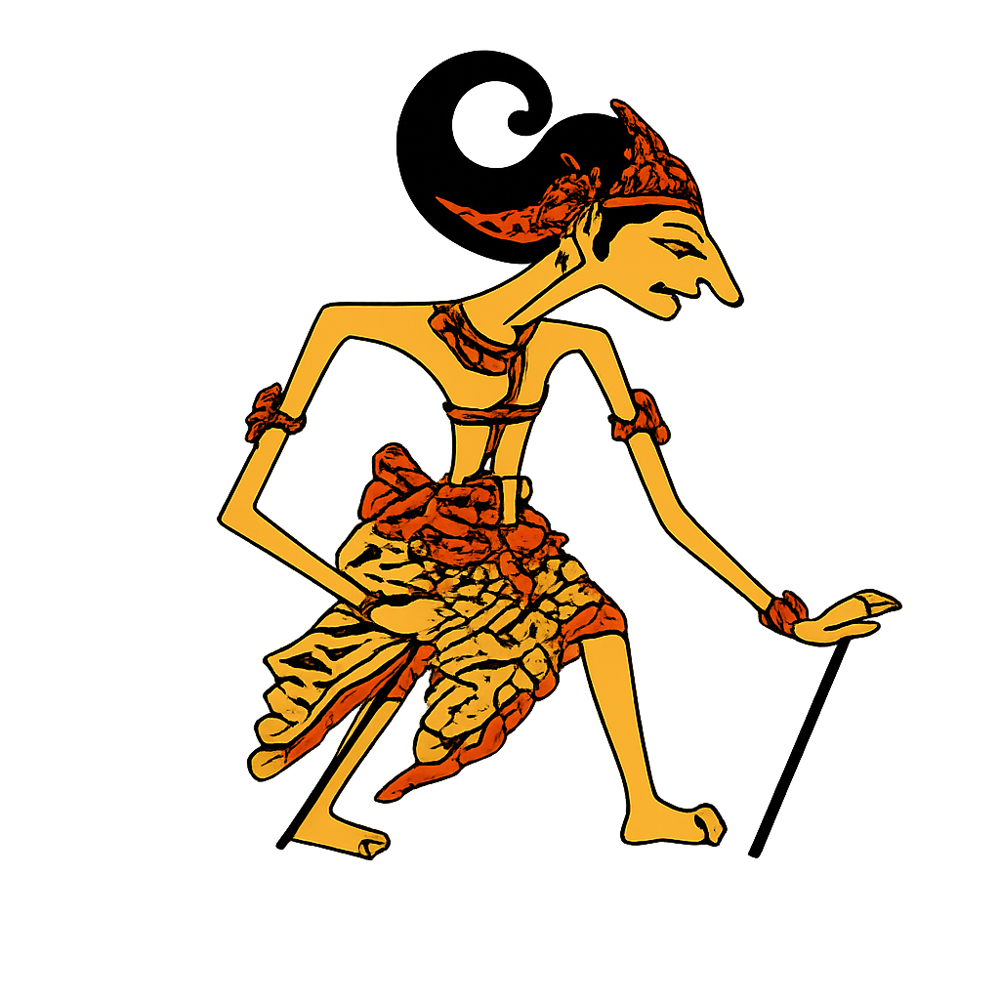

Selamat datang di tes ujian
Fokus, teliti, dan jangan terburu-buru.
🥇
✏️ Ujian
1
Sekolah Dasar (SD)
Menyiapkan latihan ujian kelas satu sampai enam
Selesai>
2
Sekolah Menengah Pertama (SMP)
Menyiapkan latihan ujian kelas tujuh sampai sembilan
Belum selesai>
3
Sekolah Menengah Atas (SMA)
Menyiapkan latihan ujian kelas sepuluh sampai dua belas
Belum selesai>